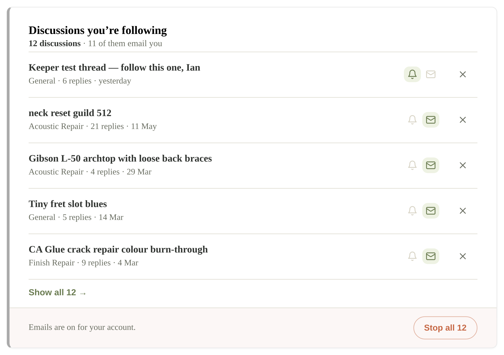
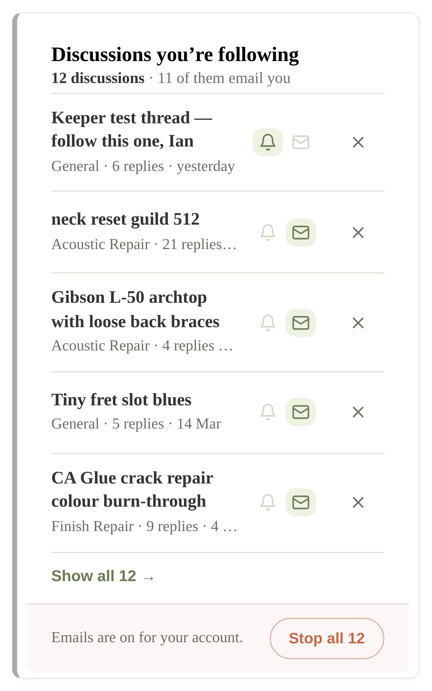
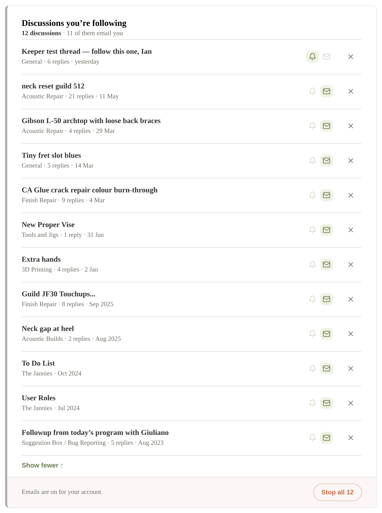

The new section sits directly under Email preferences. Both drawings below use Ian’s real account, read off dev2 this morning: 1 bell-follow and 11 email subscriptions dating back to August 2023 — twelve discussions, none of them invented. That number is the whole design problem: the list has to be bounded and there has to be one button that makes it all stop.
Built and running — screenshots, not drawings
A is built. These are photographs of the real page on dev2, signed in as Ian, reading the real stores. 52 assertions green, including a real click that removed a row and cleared both databases.



Ian’s eleven envelope rows are legacy BuddyBoss auto-subscribes from 2023–2026. He never knowingly turned most of them on. That is what Stop all 12 is for.
The drawings the build came from
A — recommended · full row
Each row says where it is, when it last moved, and why you’re hearing about it.
12 discussions · 11 of them email you
The bell and the envelope report here, they don’t toggle — this page is where you see and leave, the thread is where you tune. Five rows, then a count. One red button, always in the same place, whether you follow 2 or 200.
B — alternative · title-only, controls behind ⋯
Pure navigation. Twice the threads in the same height; state and unfollow hidden one tap deep.
12 discussions · 11 of them email you
Cleaner, and it fits more. But you can’t tell at a glance which of the twelve are the eleven emailing you — that’s the question people open this page to answer — and every unfollow costs two taps instead of one.
On the phone — 390px, recommended (A) left, alternative (B) right
12 discussions · 11 email you
12 discussions · 11 email you
The states that aren’t a list
Following nothing — most members, today.
You’re not following any discussions yet. Open a discussion in the Hub and tap the bell to be told when someone replies.
No empty table, no “0 results”. It says what the feature is and where to start it. No Stop all button when there is nothing to stop.
Stop all — what the red button asks first.
This turns off notifications and email for all 12 discussions. Your Weekly Digest and Event Reminders are not affected.
You can follow any of them again from the discussion itself.
It names the count, says exactly which two things it kills, and says out loud that it does not touch the Weekly Digest — the one thing a member would otherwise be afraid of losing.
Anon visitors never see this section at all — the page already
shows a sign-in card and hides #lg-email-prefs the same way. Data: PG
forums.topic_follow (🔔) + wp_usermeta.wp__bbp_subscriptions (✉), titles and
last-activity from the PG topic mirror. Unfollow and Stop all both write through the existing
/bb-mirror-api/v0/follow endpoint — no second write path.